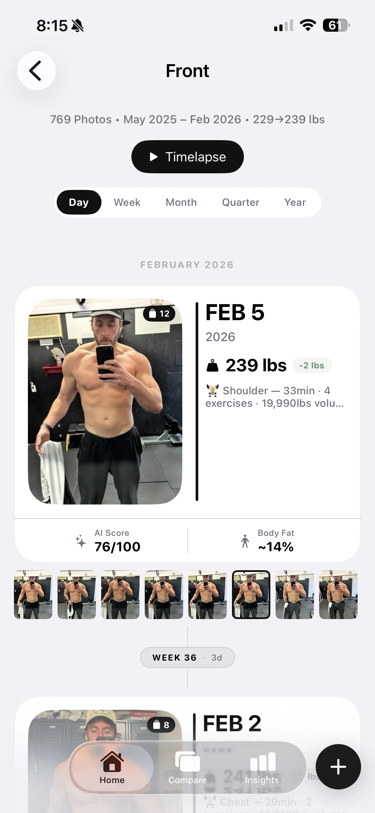

GainFrame + Hevy: The Ultimate Physique Tracking Stack
You log every set, rep, and pound of volume in Hevy. Now connect that training data directly to your visual progress photos.
 +
+

The beta is live — try it free.
Join the Beta on TestFlightBut when it comes to your visual progress, you're probably still guessing.
Your camera roll is full of disconnected gym selfies. They aren't aligned, they don't have body composition data, and worse — they aren't connected to the training that produced them. You might look bigger in a photo from March, but what were you actually training back then? You have no idea.
GainFrame fixes that by bridging the gap between what you did in the gym (Hevy) and what you look like in the mirror (GainFrame).
How the Hevy app integration works
We built GainFrame to be the visual counterpart to an app like Hevy. Here is how the integration works:
- Connect your account: Log into your Hevy account once inside the GainFrame settings.
- Take your progress photos: Use GainFrame's ghost overlay camera to take a perfectly aligned progress photo, or let GainFrame auto-import your gym selfies.
- Auto-attachment: GainFrame looks at the date of your photo, finds the workout you logged in Hevy on that exact same day, and attaches it permanently.
That's it. It requires zero daily maintenance. You just train, snap a photo, and the apps talk to each other.

Why context is everything
A photo isolated in your camera roll only tells you what you looked like. It's a single data point.
When you open a photo in GainFrame, you see a complete snapshot of your fitness journey on that exact day:
Body Composition
GainFrame's AI calculates your estimated body fat %, BMI, FFMI, and scores 12 individual muscle groups.
Weight Scaling
GainFrame pulls your daily weigh-in via Apple Health and pins it to the photo.
The Hevy Workout
Every exercise, set, and rep from that day, plus your total aggregated volume.
When you put all of this together, you can finally answer the question: "Did this program actually work?"
Comparing photos with workout context
The real magic of the Hevy integration happens when you compare two photos months apart.
Instead of just eyeballing whether your shoulders look wider, GainFrame's AI comparison tells you exactly how much your shoulder muscles improved visually (e.g., "Developing → Strong"). And right below that result, you can see your Hevy logs.
You might notice that your lateral raise volume doubled over those six months. Or that you switched from dumbbell to barbell overhead press. You're no longer guessing about what works — you have the workout data and the visual proof sitting side-by-side.
The missing piece of your fitness stack
You already track your macros. You already use Hevy to track your lifts. It's time to stop treating your progress photos like a messy folder of random selfies.
GainFrame takes the precision you apply to your training and applies it to your physique tracking. Connect Hevy, sync your photos, and let GainFrame build your ultimate transformation timeline. To get the most out of both apps, check out our tips for better progress photos.
Related Articles
Try GainFrame free
AI body composition from your progress photos. No account needed.
Join the Beta on TestFlightRequires iOS 17+ · iPhone only